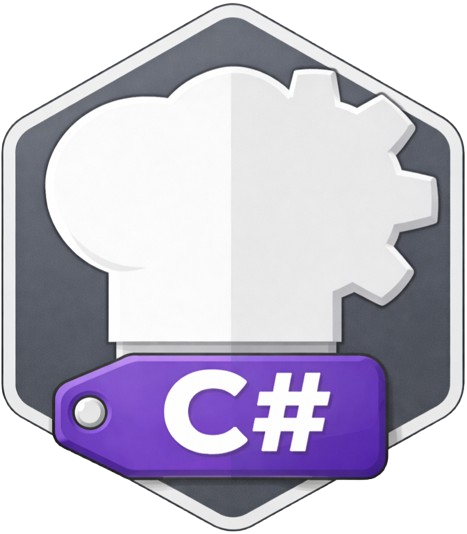

PROJECT

ZZX-LABS R&D // CYBERCHEFKIT
CyberChefC#
C#/.NET implementation companion for CyberChef transforms in enterprise and desktop environments, with reference recipe execution, .NET API and CLI generation, project configuration, test vectors, and deployment metadata.
C# // .NET CYBERCHEF PRIMITIVES
CyberChefC# Workbench
REFERENCE ENGINEC# CODEGEN.CSPROJTEST VECTORS
ENTERPRISE / DESKTOP
Portable .NET integration
Generated code uses standard BCL primitives for encoding, hashing, URL handling, and CLI/library integration.